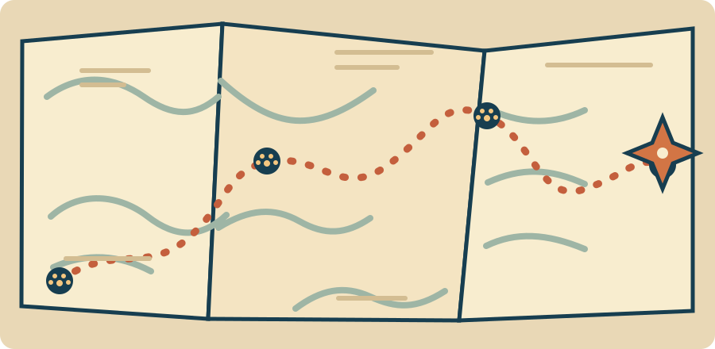

Find Us: Courageous Leopard's Cartography

A Fictional Home Base in Charlotte
For this concept, our tiny counter lives in the imagined Juniper Arcade, a walkable indoor-outdoor passage in Uptown Charlotte. Look for a blue map cabinet with a copper paw-print sign near the public seating area.
The Juniper Arcade and kiosk are fictional, so there is no real address or current place to visit. A real version of Courageous Leopard's Cartography would choose an accessible public venue and publish clear transit, parking, and step-free route details before opening.
Every Pocket Expedition begins and ends at the kiosk, but the route itself stays on public paths. Please follow posted signs and never enter a private property to complete a clue.